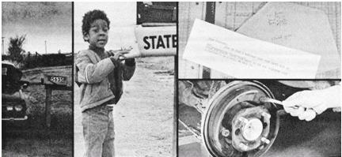

Ever wonder who delivers the daily newspaper to the folks who live along the backroads? Well, at least in some cases, it's a back-to-the-lander who works 21 hours a week . . . and earns $450 a month for doing the job!
Three years ago Wanda (my wife) and I signed a contract for a motor route dealership with our local newspaper. As a result, we buy papers directly from the publisher and deliver them daily to about three hundred customers. We also drop a bundle of the newspapers at a rural store and seven more bundles along the way to "junior dealers" who, in turn, cover smaller routes. For our services (to both individual customers and the special drops), we collect enough each month to pay for our papers, cover all our operating expenses, and leave about $450 in "wages" for us. We're not getting rich at that rate, but that's not the idea. What we wanted was a business which would bring in enough money to cover the taxes and payments on our country place . . . yet leave us sufficient time to be people instead of machines. Our newspaper delivery service is exactly that business.
The easiest way to break into this little enterprise is by taking over an established route from a deliveryman who wants to retire or move on to something else. That's how we began . . . when another dealer quit his daily deliveries and set up a "Sunday only" service to some towns back in the mountains. (Our predecessor now works just one day a week instead of seven, but still nets a respectable $160 a month for handling only the Sunday-which pays better than the dailies-edition.)
You can usually find out if any routes are open by asking one of the carriers for your local paper. Or, better yet, go directly to the newspaper's circulation manager, let him know you're interested, and-if there are no immediate openings-leave your name, address, and (if you have one) telephone number. Then drop back from time to time until you land the route you want.
Remember that there are delivery routes [1] which service individual subscribers alone, [2] that drop bundles to people who cover shorter routes, [3] which leave bundles at newsstands, stores, and other places of business, and [4] that are made up of various combinations of the first three. (Ours, for instance, combines all three of the basic possibilities.) In every case, however, your rate of pay will probably depend on the total number of miles you cover and the number of papers you deliver.
Unlike city newspaper routes which are usually delivered on foot or by bicycle, country routes are covered with a car or pickup. That means a vehicle which starts every morning, doesn't gulp gasoline, handles well, and is big enough to haul a hefty load of fat Sunday papers. A Volkswagen, of course, qualifies as well as anything on the first three points (and many carriers use them) . . . but only has so much room. We started with a Rambler and, at 110,000 miles, traded it for a Datsun wagon. The Datsun is still, after two years, in good shape and we use it for other hauling jobs as well.
No matter what kind of vehicle you drive while making your deliveries, your operating expenses can make or break you. The thousands of starts and stops every month can be murder on the machine's brakes, spark plugs, and points . . . and will set the car or truck up for an oil change and lube job at least once a month. Even if you don't have any mechanical ability, however, you can learn to handle this maintenance yourself.
An investment in some quality hand tools, a grease gun, and an oil pan will return a small basket of money within a year's time. And if you absolutely don't know an exhaust pipe from a carburetor, your local automobile dealer or auto supply house will sell you a service manual (usually for less than $10) that contains detailed "how to do it" information for exactly your make and model of car.
Gasoline, of course, will always be your major item of expense and there are ways to shave its cost too. Keep your car tuned for minimum fuel consumption, swear off hot rodding and jackrabbit starts, and plan your route so that you can drive it with the least possible backtracking.
And here's one bright note about gasoline: Although our expenses for fuel are much higher now than they were back in the days of 30 cents-a-gallon gas, the increase in fuel costs hasn't hurt our bottom line profit at all. Our expense allowance from the newspaper, you see, has been increased every time the price of gasoline has gone up. In fact, the allowance-adjusted for the number of miles we travel and the number of stops we make-has always been liberal enough to buy all the gas we use and leave a little over for tires and other expenses.
As for the long-term outlook on fuel: I don't have that answer for you. The shortage we all experienced a couple of years ago caused us so much concern that we filled our car's tank every other day while the bind was on. Later, when gasoline began to flow freely again, I bought two 55-gallon drums, filled them, and stored them out behind a small shed . . . just in case. The 100-plus gallons in the tanks will give our little delivery service two weeks' breathing space if the supply of gas is ever shut off again.
Probably more self-employment ventures fail because of poor management than for any other reason. With only a little thought, though, you can organize this enterprise as "tight as a drum".
For example, if you run around haphazardly every month trying to personally collect from your customers, the gasoline and time you'll burn up will soon total as much as if you were to service the route several extra times.
We bill our customers about the 25th of each month by simply rolling an inexpensive envelope into a newspaper and holding it in place with a rubber band. The customer's name, subscription number, the number of months the bill covers, and the total amount owed are all written right inside the envelope's flap. It's then an easy matter for the customer to pay us by mail or to put the money into the envelope and leave it in the paper box or under a rock.
In addition, we cut our bookkeeping time in half by billing for two months at once (one ahead and one back). If we haven't received payment by the 25th of the second month, we leave a reminder. This is simply a dittoed note which asks, "Have you overlooked your paper bill?" Another-slightly more pointed-reminder goes out on the first of the following month. And, if we haven't received our money by the 10th, we make a phone call and stop delivery until payment is made. We really don't have a lot of trouble, though, because we don't keep customers who are "bad pay".
And such people can be a real drain on your business. So much so that it'll pay you to keep an eye out for sudden moves. For example, there was the morning I noticed a rental moving truck backed up to the house of a fellow who'd been one of our customers for about three months. As soon as I finished the route, I went back, checked the truck, and hammered on the front door. The guy was still half asleep when he opened up . . . but I got the money. The next morning, when Wanda went by, he was gone.
Although most of the folks we deliver to are stable and reliable farmers, we have lost some money to people who live on small plots of land and work in town. We've learned to ask these families for payment in advance and you might be wise to do the same. Nothing leaves a bad taste in your mouth like the guy who moves out in the middle of the month without settling his bill.
And finally in the area of management, we think that-unless you're really up on the tax laws-it's a good idea to have an accountant figure out your tax return. If he's anything like ours, he'll more than earn his fee by helping you calculate the several breaks that you can realize on this business. (Such as-in addition to the obvious deductions for all your automotive route expenses-the percentage allowance you can deduct for telephone, heat, lights, and space in your home for an office.) Even if your "office" is only a corner of the kitchen, you're entitled to the deduction . . . you should take it . . . and your accountant can tell you how to do it.
We don't claim that our little business is for everyone (getting up at 3:30 a.m. and returning at 6:30 just isn't in some folks' constitutions). Nevertheless, we like it. Wanda and I take turns running the route which means that, every other day, we can sleep late if we like. And even on the days when we do have to "work", we still have from 6:30 on to do chores around the farm, play with the children, or tinker with our own projects.
In short, if you have a hard time getting up early, hate being out on cold mornings, or sometimes nod at the wheel . . . either forget about delivering newspapers entirely or get yourself an afternoon route. But if you can get up before dawn, you find brisk mornings invigorating, and you think that delivering newspapers is more fun than work . . . then you might want to try our particular alternative to that 8-to-5 job in town!
|
 |
|
|